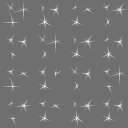

Image Recognition
This example shows how to recognize images in the viewfinder and overlay it with images. Furthermore it shows how to recognize multiple different images and how to react on user clicks on the overlaid elements.
For a better understanding, here are some terms that will be used in the following and other section of this documentation related to image recognition (IR).
Target: A target image and its associated extracted data that is used by the tracker to recognize an image.
Target collection: An archive storing a collection of targets that can be recognized by the tracker. A target collection can hold up to 1000 targets.
Tracker: The tracker analyzes the live camera image and detects the targets stored in its associated target collection. Multiple trackers can be created, however only one tracker can be active for recognition at any given time.
Image on Target (1/3)
With these terms in mind let's start by defining what actually should be recognized (target) and create a corresponding target collection that the tracker can use. In this case, the target collection includes the following single magazine page.

See Target Management for instructions how to create target collections which can be used in the Wikitude SDK.
This is the same process for every use of image recognition in ARchitect. You'll first need to define your targets and then create a target collection for it. Now let’s have a look at the JavaScript for enabling IR.
// Initialize Tracker
this.tracker = new AR.Tracker("assets/magazine.wtc", {
onLoaded: this.worldLoaded
});
// Create overlay for page one
var imgOne = new AR.ImageResource("assets/imageOne.png");
var overlayOne = new AR.ImageDrawable(imgOne, 1, {
offsetX: -0.15,
offsetY: 0
});
var pageOne = new AR.Trackable2DObject(this.tracker, "pageOne", {
drawables: {
cam: overlayOne
}
});First an AR.Tracker needs to be created in order to start the recognition engine. It is initialized with a URL specific to the target collection. Optional parameters are passed as object in the last argument. In this case a callback function for the onLoaded trigger is set. Once the tracker is fully loaded the function worldLoaded() is called.
The next step is to create the augmentation. In this example an image resource is created and passed to the AR.ImageDrawable. A drawable is a visual component that can be connected to an IR target (AR.Trackable2DObject) or a geolocated object (AR.GeoObject). The AR.ImageDrawable is initialized by the image and its size. Optional parameters allow for position it relative to the recognized target.
The last line combines everything together by creating an AR.Trackable2DObject with the previously created tracker, the name of the image target as defined in the target collection and the drawable that should augment the recognized image.
Multiple Targets (2/3)
Adding multiple targets to a target collection is straightforward. Simply follow the guide at Target Management. Each target in the target collection is identified by its id. By using this id, it is possible to create an AR.Trackable2DObject for every target in the target collection.

// Create overlay for page two
var imgTwo = new AR.ImageResource("assets/imageTwo.png");
var overlayTwo = new AR.ImageDrawable(imgTwo, 0.5, {
offsetX: 0.12,
offsetY: -0.01
});
var pageTwo = new AR.Trackable2DObject(this.tracker, "pageTwo", {
drawables: {
cam: overlayTwo
}
});Similar to the first part, the image resource and the AR.ImageDrawable for the second overlay are created. The AR.Trackable2DObject for the second page uses the same tracker but with a different id.
Interactivity (3/3)
The final step is to add interactivity to the image target. For this example a button is added to each target that opens a webpage.
The button is created similar to the overlay feature. An AR.ImageResource defines the look of the button and is reused for both buttons.
this.imgButton = new AR.ImageResource("assets/wwwButton.png");For each target an AR.ImageDrawable for the button is created by utilizing the helper function createWwwButton(url, options). The returned drawable is then added to the drawables.cam array on creation of the AR.Trackable2DObject.
var pageOneButton = this.createWwwButton("http://www.wikitude.com/pageone", 0.1, {
offsetX: -0.25,
offsetY: -0.25
});
var pageOne = new AR.Trackable2DObject(this.tracker, "pageOne", {
drawables: {
cam: [overlayOne, pageOneButton]
}
});As the button should be clickable the onClick trigger is defined in the options passed to the AR.ImageDrawable. In general each drawable can be made clickable by defining its onClick trigger.
createWwwButton: function createWwwButtonFn(url, size, options) {
options.onClick = function() {
AR.context.openInBrowser(url);
};
return new AR.ImageDrawable(this.imgButton, size, options);
},The function assigned to the click trigger calls AR.context.openInBrowser with the specified URL, which opens the URL in the browser.
Bonus: Sparkles
This section adds a little bonus to the above example. Sprite sheet animations can be used to animate images similar to animated GIFs and are used in this example to add sparkles to the overlay.
A sprite sheet is an image file that contains all key frame images required for the animation. The key frame image size (width and height) is passed at creation time and must be equal for all key frame images. Key frame images will be managed in an array, starting with entry 0. The key frame image array will be filled from left to right, row by row. Any partly filled key frames at the edge of the sprites sheet will be ignored.

First the image resource is created which is used for creating the AR.AnimatedImageDrawable. Since the width/height of the sprite sheet is 512 and it carries 16 key frames, the width and height of a single image is 128. So we set 128 as the width and height of the AnimatedImageDrawable.
// Sparkles
var imgSparkles = new AR.ImageResource("assets/imageSparkles.png");
var sparkles = new AR.AnimatedImageDrawable(imgSparkles, 0.25, 128, 128, {
offsetX: -0.2,
offsetY: 0.5,
rotation: 75
});To start the animation the order of the keyframes needs to be passed as array. Additionally the time each frame is displayed in ms and the loop count needs to be defined. In this case each image is displayed 100ms before it changes and a loop count of -1 plays the animation in an infinite loop.
sparkles.animate([0, 1, 2, 3, 4, 5, 6, 7, 8, 9, 10, 11, 12, 13, 14, 15], 100, -1);The last step is to add it as drawable to the AR.Trackable2DObject so it will be overlaid on the first page.
var pageOne = new AR.Trackable2DObject(this.tracker, "pageOne", {
drawables: {
cam: [overlayOne, pageOneButton, sparkles]
}
});